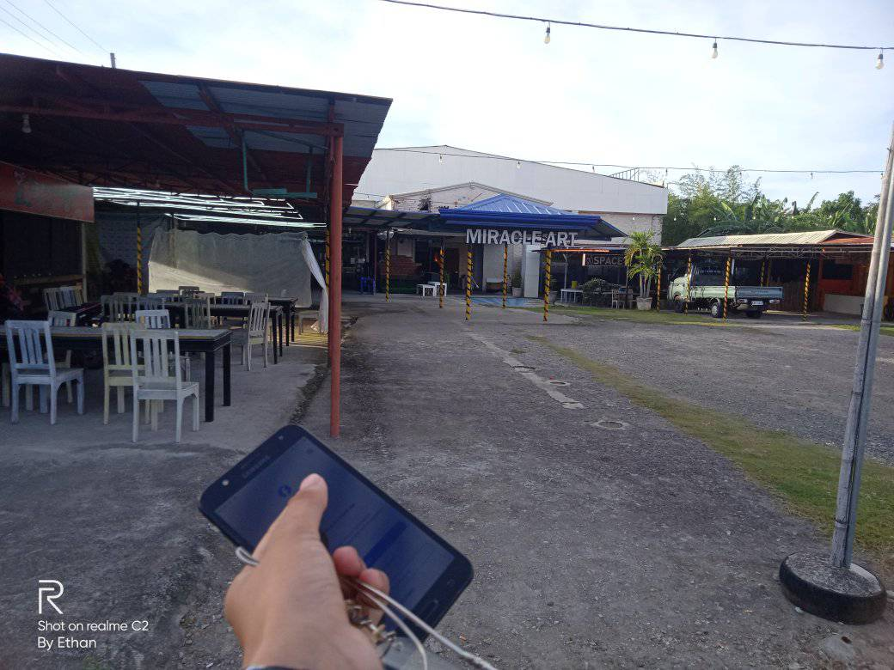

Investigating the Enchantment of Painting: Miracle Art Museum in Cordova, Cebu City The Miracle Art Museum in Cordova is a special treasure that art lovers and inquisitive tourists shouldn't miss when visiting Cebu City, which is well-known for its lengthy history, breathtaking scenery, and dynamic culture. This museum, which is tucked away in the center of the busy city, is a sanctuary for anybody looking for an engaging and visually fascinating creative experience.
Opening of the Miracle Museum of Art: Visitors are taken to a realm where art surpasses conventional limits when they enter the Miracle Art Museum. The museum offers an immersive experience into the world of optical illusions and interactive artwork, not just a location to view paintings on walls.